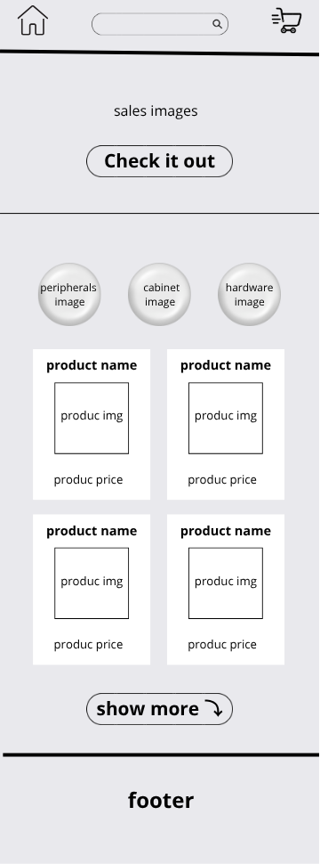
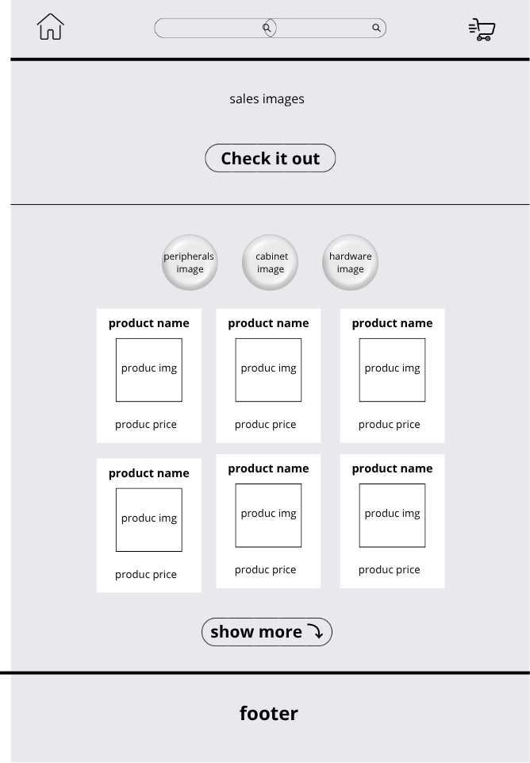

Individual Project Site Plan
Site Name
HighEnd Tecnology
I chose this name because it conveys the idea of a high quality for hardware in general, offering products, accessories, and technical information.
Optional available domain: highend-store.com
Site Purpose
The purpose of this site is to offer an online platform for selling high-quality hardware components such as graphics cards, processors, memory, and peripherals. In addition to the store, the site will provide technical information and product recommendations.
Scenarios
- What are the best processors for building gaming PCs?
- Which are the best components to build to best cost-benefit PC?
Color Schema
The color scheme was selected to convey trust, technology, and modernity.
- Gunmetal (#002E3D) - used for headers, footers, and primary buttons.
- Delft Blue (#3D4866) - used for highlights, call-to-action buttons, and important links.
- Anti-Flash White (#E9E9ED) - used for backgrounds
Typography
- Poppins - used for titles and headings because it is modern, clean, and professional.
- Open Sans - used for body text due to its excellent readability and neutral design.
Wireframe
Below are the wireframes representing the structure of the homepage.
Mobile View

Desktop View
